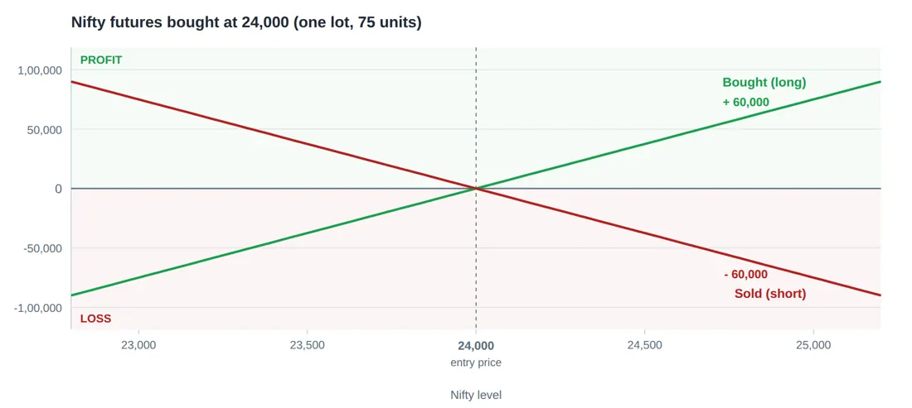
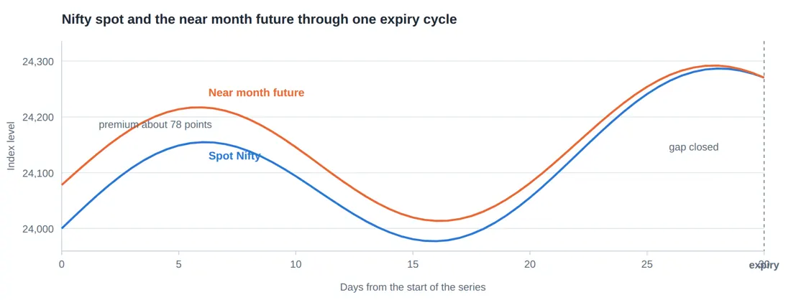
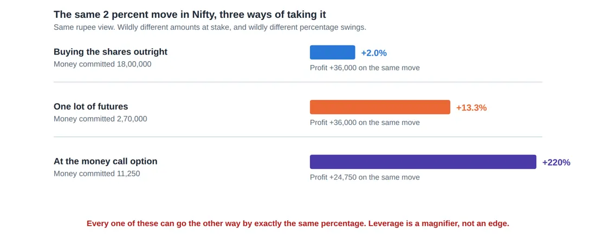

Library / MiyeeStockBuddy: The Complete Guide to Indian Markets
Part 9. Futures in Depth
A future is an agreement to buy or sell something at a fixed price on a fixed future date. It is the simpler of the two derivative instruments, because its payoff is a straight line and there is no premium, no decay and no Greek letters. It is also, for exactly that reason, the more dangerous one for a beginner: nothing about it caps the loss.
9.1 The Payoff Is a Straight Line
If you buy a Nifty future at 24,000 and Nifty ends at 24,300, you gain 300 points multiplied by the lot size. If it ends at 23,700, you lose 300 points multiplied by the lot size. There is no asymmetry anywhere in the instrument.

Profit and loss in rupees, one lot
Figure 28. A futures position moves rupee for rupee with the index, in both directions. There is no premium to pay and no cushion: the same line that carries the profit carries the loss.
The person who sold you that contract has the exact mirror image. Their profit is your loss, rupee for rupee. This symmetry is the whole character of futures, and it is what makes them honest and unforgiving at the same time.
Nifty on expiry day | Long one lot, bought at 24,000 | Short one lot, sold at 24,000 |
|---|---|---|
23,400 | - 45,000 | + 45,000 |
23,700 | - 22,500 | + 22,500 |
24,000 | 0 | 0 |
24,300 | + 22,500 | - 22,500 |
24,600 | + 45,000 | - 45,000 |
Notice there is no row where either side is protected. This is why a futures position without a stop loss is not a trade, it is an open ended promise.
9.2 Why the Future Trades Above the Spot Price
You will usually see the near month future quoting a little above the index itself. That gap is not a prediction that the market will rise. It is arithmetic, and it has a name: cost of carry.
Think of it like this Suppose you could buy the whole Nifty basket today for eighteen lakh rupees, or agree to buy it in thirty days. If you buy it today, that eighteen lakh is tied up for thirty days and earns you nothing, while it could have been sitting in a deposit earning interest. So the person willing to wait thirty days should pay slightly more, by roughly the interest they saved. That is the whole idea. The future costs more because buying later lets your money work in the meantime. |
Fair futures price = Spot + (Spot x interest rate x days to expiry / 365) - dividends expected Spot Nifty 24,000 Interest rate 6.5% a year Days to expiry 30 Carry = 24,000 x 0.065 x 30/365 = 128 points Fair futures price 24,128 |
The difference between the actual futures price and the spot price is called the basis. It shrinks steadily as expiry approaches, and on expiry day it must be zero, because the contract settles at the spot price by definition.

Figure 29. A futures contract normally trades a little above the index, because holding the position costs interest. That gap is the basis, and it shrinks to nothing by expiry day. On expiry the two are the same number, by definition.
When the basis goes the other way
Sometimes the future trades below the spot. That is called a discount, and it is genuine information. It usually means either a large dividend is expected before expiry, or there is heavy selling pressure in futures, typically because institutions are hedging their holdings. A persistent deep discount in a falling market is one of the few sentiment readings worth paying attention to.
9.3 Leverage: The Only Thing Futures Really Give You
A futures contract does not give you a better view than a share. It gives you the same view in a much larger size for the same money. That is the entire product.

Figure 30. Leverage does not improve the view, it only changes how much the view is worth. The option column looks best on the way up and is the first to go to zero on the way down.
The same two percent, three ways Nifty is at 24,000. You believe it goes to 24,480, a rise of 2 percent. Buying the basket outright: you would need 18,00,000. A 2 percent rise gives 36,000, which is a 2 percent return. One futures lot: margin about 2,70,000. The same 480 point move gives 480 x 75 = 36,000, which is 13.3 percent on the money you committed. One at the money call at a premium of 150: cost 11,250. If the move happens quickly the option may be worth around 480, so roughly 24,750 of profit, which is over 200 percent. Every one of those percentages works identically in reverse. The futures position loses 13.3 percent of your committed capital on a 2 percent fall, and the option loses everything if the move does not arrive before expiry. |
The rule to remember Leverage does not improve your analysis. It multiplies the consequence of your analysis, in both directions, and it shortens the time you have to be right. A view that would have been correct over six months is irrelevant to a contract that expires in nine days. |
9.4 Hedging With Futures: The Use That Justifies Them
Suppose you hold a portfolio of Indian shares worth eighteen lakh rupees. You believe the market may fall over the next month, but you do not want to sell, because selling means paying capital gains tax, losing your long term holdings and having to buy back at an unknown price.
You can sell one Nifty futures lot instead. If the market falls, the futures position gains roughly what the portfolio loses. If the market rises, the futures position loses roughly what the portfolio gains. You have parked the market risk without touching a single share.
A hedge, priced out Portfolio value 18,00,000, broadly tracking the Nifty. Nifty at 24,000, lot size 75, so one lot covers 18,00,000. Sell one lot. If Nifty falls 5 percent to 22,800: Portfolio loses about 90,000 Short futures gains 1,200 points x 75 = 90,000 Net effect: roughly zero. The hedge worked. If Nifty rises 5 percent to 25,200: Portfolio gains about 90,000 Short futures loses 90,000 Net effect: roughly zero. That is the price of the insurance. |
Two honest limitations. First, your portfolio is not the Nifty; if you hold mid caps and small caps they can fall much more than the index, and the hedge will only cover part of it. Second, hedging is not free even when it costs no premium: you have given up the upside for the period of the hedge. A hedge is a decision to stop participating for a while, not a way to have it both ways.
9.5 Rollover, and What the Rollover Data Tells You
When a contract nears expiry, a trader who wants to keep the position must close the expiring one and open the same position in the next month. That is a rollover, and because the exchange publishes how much of the open interest rolled over, it becomes a sentiment reading available to anyone.
What you see near expiry | What it suggests |
|---|---|
High rollover percentage with rising prices | Positions being carried forward with conviction; the trend has backing |
High rollover with falling prices | Short positions being carried forward; bearishness is not being closed |
Low rollover | Positions being abandoned rather than carried; the view has expired with the contract |
Rollover at a large cost, meaning a wide gap between the two months | Strong demand to stay positioned, which itself is information |
Rollover data is one of the few genuinely useful derivative statistics for someone who does not trade derivatives at all, because it tells you what large positioned money is doing with its own money at a moment when it must make a decision.
© Vipin Nair. This guide is for reading online only. Copying, downloading, printing and redistribution are not permitted. For study and general reference; not legal, tax or investment advice.